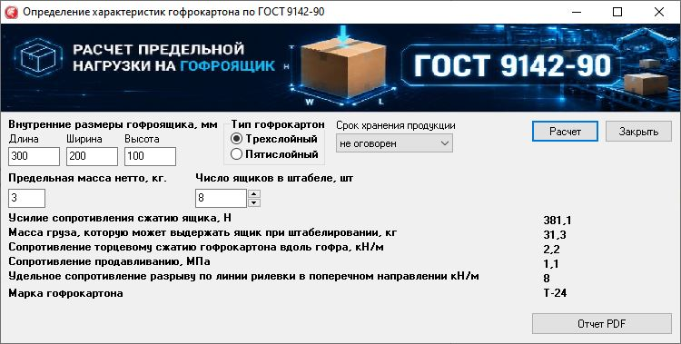
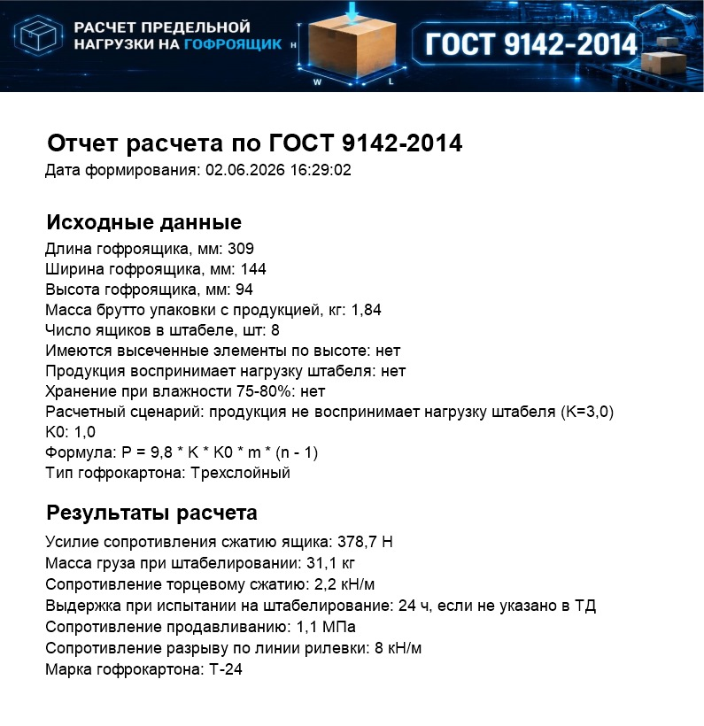

Расчет предельной нагрузки на гофроящик по ГОСТ 9142-2014
Программа помогает быстро определить характеристики гофроящика: усилие сопротивления сжатию, допустимую массу груза при штабелировании, сопротивление торцевому сжатию, продавливанию и разрыву по линии рилевки.
Результат сразу превращается в аккуратный PDF-отчет с исходными данными, расчетными показателями и фирменным баннером программы.
Как работает Результаты Скачать демоверсию PDF-отчет
Windows
ГОСТ 9142-2014
Гофрокартон
PDF-отчет
Флажки условий
Для кого
✔ технологи и конструкторы гофроупаковки
✔ отделы качества и производственные лаборатории
✔ менеджеры, которым нужно быстро подтвердить параметры ящика
✔ предприятия, где важны стабильность штабеля и отсутствие рекламаций
Практический смысл: меньше расчетов вручную, меньше ошибок в документах,
быстрее согласование конструкции и марки гофрокартона.
Как это выглядит в программе
Вводятся внутренние размеры ящика, тип гофрокартона, расчетные флажки, массу брутто и количество ящиков в штабеле. После расчета программа выводит все ключевые показатели.

Какие данные рассчитываются
Нагрузка и штабелирование
Расчет показывает усилие сопротивления сжатию ящика и испытательную массу при штабелировании. Если продукция воспринимает нагрузку штабеля, эти проверки помечаются как "не проводятся".
Характеристики картона
Определяются сопротивление торцевому сжатию вдоль гофра, сопротивление продавливанию и сопротивление разрыву по линии рилевки.
Марка гофрокартона
По введенным условиям программа подбирает рекомендуемую марку трехслойного или пятислойного гофрокартона. Если продукция воспринимает нагрузку штабеля, подбор выполняется без требования по торцевому сжатию.
Исходные данные
Размеры ящика
длина, ширина, высота в миллиметрах
длина, ширина, высота в миллиметрах
Тип гофрокартона
трехслойный или пятислойный
трехслойный или пятислойный
Расчетные признаки
высеченные элементы, восприятие нагрузки штабеля продукцией, влажность 75-80%
высеченные элементы, восприятие нагрузки штабеля продукцией, влажность 75-80%
Условия штабеля
масса брутто и число ящиков в штабеле
масса брутто и число ящиков в штабеле
PDF-отчет без ручного оформления
Отчет формируется сразу после расчета и автоматически открывается после сохранения. В документ попадают исходные данные, дата формирования, все расчетные результаты и верхний баннер программы.
- одна страница с понятной структурой;
- исходные данные и расчетные значения в одном документе;
- удобно приложить к технологической карте, письму или внутреннему согласованию.

Инженерная логика расчета
Точность и повторяемость
Программа убирает зависимость от ручных пересчетов и разных Excel-файлов: одинаковые входные данные дают одинаковый результат и единый формат отчета.
Быстрое сравнение вариантов
Можно менять размеры, массу брутто, тип картона, признаки штабелирования и количество ящиков в штабеле, сразу видя, как меняется требуемая марка и расчетные сопротивления.
Покупка программы
10 000 ₽
Постоянная лицензия для рабочего места Windows.
Аренда
2 000 ₽ за 1 год
Удобно для временного использования, проверки расчетов и разовых проектов.
Познакомьтесь также с другими моими программами

Калькулятор гофроящиков
Себестоимость гофроящиков, листов и рулонов, техкарты и PDF-отчеты.
Страница

Менеджер лицензий
Учет лицензий, контроль сроков действия, ответственные, уведомления и экспорт в Excel.
Страница
Поисковик по базам данных
Поиск объектов и данных в SQL Server, фильтры, анализ и экспорт результатов.
Страница